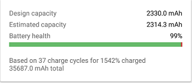
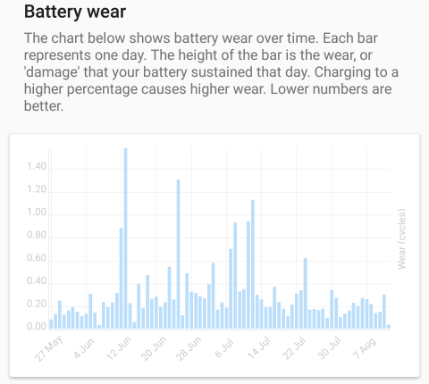
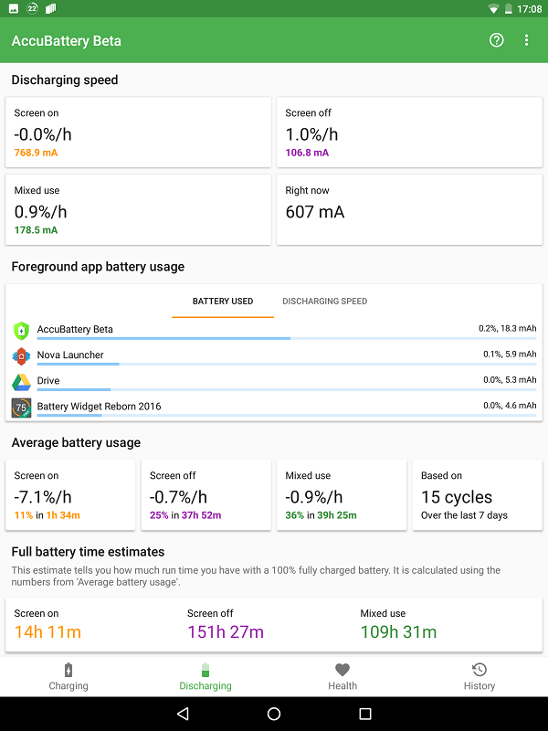
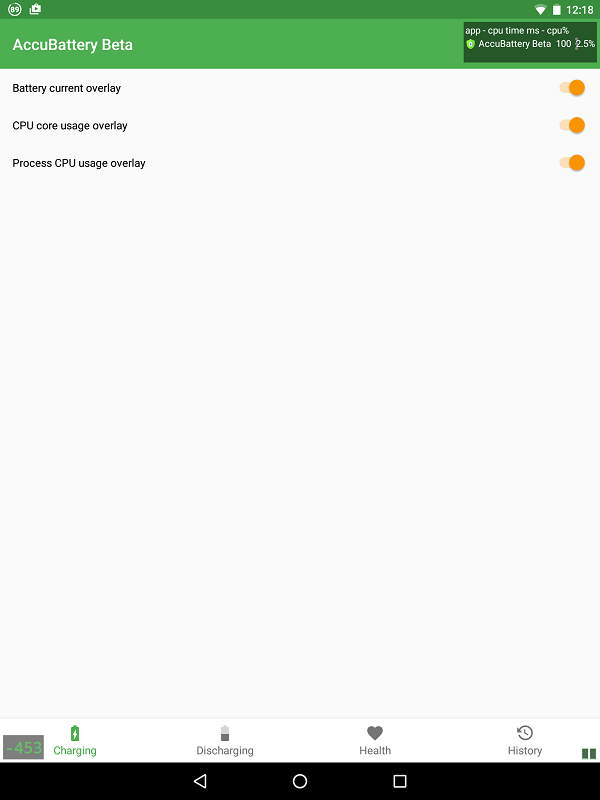

电池到底剩多少健康？装了 AccuBattery 我才知道之前都被系统骗了
用了一周 AccuBattery，聊聊它怎么测出真实电池健康度、为什么和系统显示对不上，以及 Premium 值不值得买。
为什么我会装这个 App
上个月换机，把用了两年的旧手机给了我妈。临走前想看看那块电池还剩多少健康度——系统设置里显示"良好"，但总觉得这说法太模糊。搜了一圈，AccuBattery官网 是被推荐最多的电池健康测量 App，就从官方下载装了一个试试。
说实话一开始没抱太大期望。这类工具 App 嘛，界面花里胡哨、数据不准、广告一堆，是我对它们的刻板印象。但 AccuBattery 确实有点不一样。
初印象：界面干净，功能直接
打开之后四个 Tab，充电、放电、健康、历史，结构非常清晰，没有首页那种乱七八糟的推荐和引导。健康 Tab 一进去就是一个大大的电池健康度百分比，下面是容量、磨损率、循环次数这些关键数据。

我最惊讶的是它测健康度的方式——不是读系统 API 给的一个预设值，而是真实测量充电过程中的电量增量。充电到 100% 的过程中，它持续记录电流和电压，最后算出这块电池实际能装多少 mAh，再和标称容量对比得出健康度。这个方法让我觉得靠谱得多。

实际用下来：三个核心体验
1. 充电提醒真的解决了我的痛点
我以前习惯睡觉前插上充电器，早上才拔。锂电池长期满电对寿命不好，这个道理懂但就是懒得设闹钟。AccuBattery 可以自定义充电到多少百分比时弹窗提醒，我设到 85%——晚上插上，到点它响一声，翻个身就拔了。
这个功能免费版就有，而且非常灵敏。我用了一周，提醒从没漏掉过。
2. 应用耗电排行比系统诚实多了
系统自带的电池用量面板和 AccuBattery 的应用耗电排行，两个数据经常对不上。一开始我以为是谁算错了，后来去AccuBattery文档翻了一下才搞明白：系统用的是预设 profile 估算，而 AccuBattery 是前台计量法——哪个 App 在前台运行的那段时间，整机耗电全算它头上。
说实话这个方法听起来有点粗暴，但团队的态度我挺欣赏的：宁可粗一点但诚实。系统的 profile 是实验室条件下测的预设值，你在不同亮度、不同网络下用同一款 App，真实耗电可能差两三倍，系统那个数字根本不准。
测试新 App 耗电的时候我现在都先开 AccuBattery 测一轮，比看系统那个估算值靠谱多了。

3. Premium 悬浮窗是测试党的神器
说实话我本来没打算买 Premium，免费版的核心功能已经够用了——健康度、磨损追踪、充电提醒全都在。但悬浮窗功能确实诱惑人。
开了悬浮窗之后，App 在前台运行时屏幕上会实时显示电流、CPU 使用率这些数据。想测一款游戏耗电凶不凶、省电模式开了到底省了多少电，悬浮窗一开，跑十分钟数据就出来了。这个功能免费版没有，而且确实独一份。

Premium 是一次性买断不是订阅，这点也加分。不过如果你只是想看看健康度、设个充电提醒，免费版完全够用，没必要花这个钱。
适合谁，不适合谁
适合的人：
- 想知道自己手机电池真实健康度的——系统那个"良好/一般"太模糊了
- 有电池焦虑、想延长电池寿命的——充电提醒 + 磨损追踪组合拳很实用
- 喜欢折腾、想测 App 耗电或者充电器速度的——悬浮窗 + 历史解锁是专业工具
不太需要的人：
- 对电池健康无所谓、手机两三年一换的
- 不想装任何工具 App 的
- 以为装了就能省电的——它是测量工具，不是优化器，不会帮你省一格电
一点小吐槽
AccuBattery 有个权限叫"应用使用统计"，不给的话应用耗电排行就是空白。这个权限得自己去系统设置里手动开，App 弹不了请求对话框。第一次用的时候找了半天，小米的路径藏得特别深。不过除此之外也没什么好抱怨的——界面干净、广告不烦人、核心功能全免费，这样的工具 App 现在真不多见了。
总结
用了一周下来，AccuBattery 是我手机里少数几个装了之后没删掉的工具 App。它不玩套路，核心功能免费给，收费的都是锦上添花的增强功能。如果你也好奇自己那块电池到底还剩多少本钱，装一个测一下——反正免费，测完不满意删就是了。对了，文档里提到的那些技术细节和测试方法，在 GitHub、Gitee、GitCode 三个仓库都能找到资料，国内访问哪个顺手用哪个。